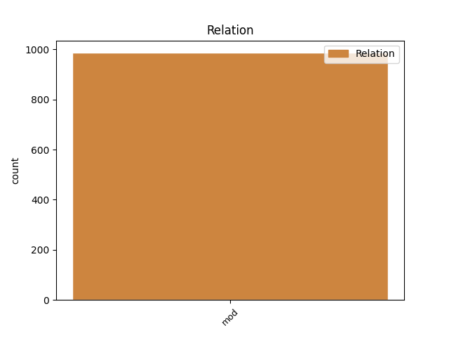

Distribution of features within this leaf

Agreement Rules sorted by frequency.
- When the dependent token is the modifer(mod) of the head token, and the head token is NOUN and the dependent token is NUM.
1 Również _ _ _ _ 0 _ _ _
2 Republika _ _ _ _ 0 _ _ _
3 Federalna _ _ _ _ 0 _ _ _
4 Niemiec _ _ _ _ 0 _ _ _
5 przedstawiła _ _ _ _ 0 _ _ _
6 na _ _ _ _ 0 _ _ _
7 swą _ _ _ _ 0 _ _ _
8 obronę _ _ _ _ 0 _ _ _
9 , _ _ _ _ 0 _ _ _
10 zarówno _ _ _ _ 0 _ _ _
11 w _ _ _ _ 0 _ _ _
12 ramach _ _ _ _ 0 _ _ _
13 postępowania _ _ _ _ 0 _ _ _
14 poprzedzającego _ _ _ _ 0 _ _ _
15 wniesienie _ _ _ _ 0 _ _ _
16 skargi _ _ _ _ 0 _ _ _
17 , _ _ _ _ 0 _ _ _
18 jak _ _ _ _ 0 _ _ _
19 również _ _ _ _ 0 _ _ _
20 w _ _ _ _ 0 _ _ _
21 niniejszym _ _ _ _ 0 _ _ _
22 postępowaniu _ _ _ _ 0 _ _ _
23 , _ _ _ _ 0 _ _ _
24 argumenty _ _ _ _ 0 _ _ _
25 dotyczące _ _ _ _ 0 _ _ _
26 tych _ _ _ _ 0 _ _ _
27 dwóch dwa NUM num:pl:gen:n:congr:ncol Case=Gen|Gender=Neut|Number=Plur|NumForm=Word 28 mod _ _
28 pojęć pojęcie NOUN subst:pl:gen:n:ncol Case=Gen|Gender=Neut|Number=Plur 0 _ _ _
29 . _ _ _ _ 0 _ _ _
1 Komitet _ _ _ _ 0 _ _ _
2 wybiera _ _ _ _ 0 _ _ _
3 przewodniczącego _ _ _ _ 0 _ _ _
4 i _ _ _ _ 0 _ _ _
5 dwóch _ _ _ _ 0 _ _ _
6 wiceprzewodniczących _ _ _ _ 0 _ _ _
7 , _ _ _ _ 0 _ _ _
8 każdego _ _ _ _ 0 _ _ _
9 większością _ _ _ _ 0 _ _ _
10 dwóch dwa NUM num:pl:gen:m1:congr:ncol Animacy=Hum|Case=Gen|Gender=Masc|Number=Plur|NumForm=Word 11 mod _ _
11 trzecich trzeci ADJ adj:pl:gen:m1:pos Animacy=Hum|Case=Gen|Degree=Pos|Gender=Masc|Number=Plur 0 _ _ _
12 obecnych _ _ _ _ 0 _ _ _
13 członków _ _ _ _ 0 _ _ _
14 . _ _ _ _ 0 _ _ _
1 Wy wy PRON ppron12:pl:nom:m1:sec Animacy=Hum|Case=Nom|Gender=Masc|Number=Plur|Person=2|PronType=Prs 0 _ _ _
2 dwaj dwa NUM num:pl:nom:m1:congr:ncol Animacy=Hum|Case=Nom|Gender=Masc|Number=Plur|NumForm=Word 1 mod _ _
3 idziecie _ _ _ _ 0 _ _ _
4 do _ _ _ _ 0 _ _ _
5 Armington _ _ _ _ 0 _ _ _
6 Road _ _ _ _ 0 _ _ _
7 , _ _ _ _ 0 _ _ _
8 schowajcie _ _ _ _ 0 _ _ _
9 się _ _ _ _ 0 _ _ _
10 na _ _ _ _ 0 _ _ _
11 skrzyżowaniu _ _ _ _ 0 _ _ _
12 z _ _ _ _ 0 _ _ _
13 Stratford _ _ _ _ 0 _ _ _
14 . _ _ _ _ 0 _ _ _
1 LICZBA _ _ _ _ 0 _ _ _
2 mieszkańców _ _ _ _ 0 _ _ _
3 Ziemi _ _ _ _ 0 _ _ _
4 cierpiących _ _ _ _ 0 _ _ _
5 na _ _ _ _ 0 _ _ _
6 nadwagę _ _ _ _ 0 _ _ _
7 : _ _ _ _ 0 _ _ _
8 1100000000 1100000000 NUM num:pl:nom:m3:rec Animacy=Inan|Case=Nom|Gender=Masc|Number=Plur|NumForm=Digit|NumType=Card 0 _ _ _
9 ( _ _ _ _ 0 _ _ _
10 słownie _ _ _ _ 0 _ _ _
11 : _ _ _ _ 0 _ _ _
12 miliard miliard NUM num:pl:nom:m3:rec Animacy=Inan|Case=Nom|Gender=Masc|Number=Plur|NumForm=Word 8 mod _ _
13 sto _ _ _ _ 0 _ _ _
14 milionów _ _ _ _ 0 _ _ _
15 ) _ _ _ _ 0 _ _ _
16 . _ _ _ _ 0 _ _ _
1 Dwaj _ _ _ _ 0 _ _ _
2 młodzi _ _ _ _ 0 _ _ _
3 strażnicy _ _ _ _ 0 _ _ _
4 municypalni _ _ _ _ 0 _ _ _
5 byli _ _ _ _ 0 _ _ _
6 niestety _ _ _ _ 0 _ _ _
7 pijani _ _ _ _ 0 _ _ _
8 : _ _ _ _ 0 _ _ _
9 kierowca _ _ _ _ 0 _ _ _
10 miał _ _ _ _ 0 _ _ _
11 we _ _ _ _ 0 _ _ _
12 krwi _ _ _ _ 0 _ _ _
13 1,6 _ _ _ _ 0 _ _ _
14 promila _ _ _ _ 0 _ _ _
15 alkoholu _ _ _ _ 0 _ _ _
16 , _ _ _ _ 0 _ _ _
17 zaś _ _ _ _ 0 _ _ _
18 jego _ _ _ _ 0 _ _ _
19 kolega _ _ _ _ 0 _ _ _
20 trochę _ _ _ _ 0 _ _ _
21 więcej więcej DET num:pl:acc:m3:rec Animacy=Inan|Case=Acc|Gender=Masc|Number=Plur|NumType=Card|PronType=Ind 0 _ _ _
22 — _ _ _ _ 0 _ _ _
23 1,8 1,8 NUM num:pl:acc:m3:rec Animacy=Inan|Case=Acc|Gender=Masc|Number=Plur|NumForm=Digit|NumType=Card 21 mod _ SpaceAfter=No
24 . _ _ _ _ 0 _ _ _
Disagree Examples:
1 Czterech _ _ _ _ 0 _ _ _
2 mężczyzn mężczyzna NOUN subst:pl:gen:m1 Animacy=Hum|Case=Gen|Gender=Masc|Number=Plur 0 _ _ _
3 w _ _ _ _ 0 _ _ _
4 wojskowych _ _ _ _ 0 _ _ _
5 spodniach _ _ _ _ 0 _ _ _
6 , _ _ _ _ 0 _ _ _
7 trzech trzy NUM num:pl:nom:m1:rec Animacy=Hum|Case=Nom|Gender=Masc|Number=Plur|NumForm=Word 2 mod _ _
8 w _ _ _ _ 0 _ _ _
9 żółtych _ _ _ _ 0 _ _ _
10 koszulkach _ _ _ _ 0 _ _ _
11 , _ _ _ _ 0 _ _ _
12 a _ _ _ _ 0 _ _ _
13 jeden _ _ _ _ 0 _ _ _
14 w _ _ _ _ 0 _ _ _
15 brązowej _ _ _ _ 0 _ _ _
16 , _ _ _ _ 0 _ _ _
17 wykonuje _ _ _ _ 0 _ _ _
18 taki _ _ _ _ 0 _ _ _
19 sam _ _ _ _ 0 _ _ _
20 krok _ _ _ _ 0 _ _ _
21 taneczny _ _ _ _ 0 _ _ _
22 . _ _ _ _ 0 _ _ _
1 Dlatego _ _ _ _ 0 _ _ _
2 do _ _ _ _ 0 _ _ _
3 rządu _ _ _ _ 0 _ _ _
4 trafi _ _ _ _ 0 _ _ _
5 pięciu _ _ _ _ 0 _ _ _
6 ludzi człowiek NOUN subst:pl:gen:m1 Animacy=Hum|Case=Gen|Gender=Masc|Number=Plur 0 _ _ _
7 Jagielińskiego _ _ _ _ 0 _ _ _
8 - _ _ _ _ 0 _ _ _
9 dwóch dwa NUM num:pl:nom:m1:rec Animacy=Hum|Case=Nom|Gender=Masc|Number=Plur|NumForm=Word 6 mod _ _
10 w _ _ _ _ 0 _ _ _
11 randze _ _ _ _ 0 _ _ _
12 sekretarza _ _ _ _ 0 _ _ _
13 stanu _ _ _ _ 0 _ _ _
14 ( _ _ _ _ 0 _ _ _
15 pierwszego _ _ _ _ 0 _ _ _
16 wiceministra _ _ _ _ 0 _ _ _
17 - _ _ _ _ 0 _ _ _
18 red _ _ _ _ 0 _ _ _
19 . _ _ _ _ 0 _ _ _
20 ) _ _ _ _ 0 _ _ _
21 , _ _ _ _ 0 _ _ _
22 a _ _ _ _ 0 _ _ _
23 trzech _ _ _ _ 0 _ _ _
24 jako _ _ _ _ 0 _ _ _
25 podsekretarze _ _ _ _ 0 _ _ _
26 stanu _ _ _ _ 0 _ _ _
27 . _ _ _ _ 0 _ _ _
1 5 _ _ _ _ 0 _ _ _
2 . _ _ _ _ 0 _ _ _
3 Upoważnia _ _ _ _ 0 _ _ _
4 się _ _ _ _ 0 _ _ _
5 Zarząd _ _ _ _ 0 _ _ _
6 Gminy _ _ _ _ 0 _ _ _
7 Wąbrzeźno _ _ _ _ 0 _ _ _
8 do _ _ _ _ 0 _ _ _
9 samodzielnego _ _ _ _ 0 _ _ _
10 zaciągania _ _ _ _ 0 _ _ _
11 zobowiązań _ _ _ _ 0 _ _ _
12 finansowych _ _ _ _ 0 _ _ _
13 nie _ _ _ _ 0 _ _ _
14 przekraczających _ _ _ _ 0 _ _ _
15 kwoty kwota NOUN subst:sg:gen:f Case=Gen|Gender=Fem|Number=Sing 0 _ _ _
16 : _ _ _ _ 0 _ _ _
17 70.000,00 70.000,00 NUM num:pl:nom:m2:rec Animacy=Nhum|Case=Nom|Gender=Masc|Number=Plur|NumForm=Digit|NumType=Card 15 mod _ SpaceAfter=No
18 . _ _ _ _ 0 _ _ _
1 - _ _ _ _ 0 _ _ _
2 Najistotniejsze _ _ _ _ 0 _ _ _
3 jest _ _ _ _ 0 _ _ _
4 to _ _ _ _ 0 _ _ _
5 , _ _ _ _ 0 _ _ _
6 o _ _ _ _ 0 _ _ _
7 czym _ _ _ _ 0 _ _ _
8 wspominano _ _ _ _ 0 _ _ _
9 , _ _ _ _ 0 _ _ _
10 że _ _ _ _ 0 _ _ _
11 powstanie _ _ _ _ 0 _ _ _
12 jeden _ _ _ _ 0 _ _ _
13 z _ _ _ _ 0 _ _ _
14 najsilniejszych _ _ _ _ 0 _ _ _
15 prawdopodobnie _ _ _ _ 0 _ _ _
16 uniwersytetów _ _ _ _ 0 _ _ _
17 w _ _ _ _ 0 _ _ _
18 Polsce _ _ _ _ 0 _ _ _
19 , _ _ _ _ 0 _ _ _
20 taką _ _ _ _ 0 _ _ _
21 mamy _ _ _ _ 0 _ _ _
22 nadzieję _ _ _ _ 0 _ _ _
23 : _ _ _ _ 0 _ _ _
24 ponad _ _ _ _ 0 _ _ _
25 23 23 NUM num:pl:nom:m3:congr Animacy=Inan|Case=Nom|Gender=Masc|Number=Plur|NumForm=Digit|NumType=Card 28 mod _ _
26 tys _ _ _ _ 0 _ _ _
27 . _ _ _ _ 0 _ _ _
28 studentów student NOUN subst:pl:gen:m1 Animacy=Hum|Case=Gen|Gender=Masc|Number=Plur 0 _ _ _
29 , _ _ _ _ 0 _ _ _
30 ponad _ _ _ _ 0 _ _ _
31 140 _ _ _ _ 0 _ _ _
32 profesorów _ _ _ _ 0 _ _ _
33 belwederskich _ _ _ _ 0 _ _ _
34 ( _ _ _ _ 0 _ _ _
35 sam _ _ _ _ 0 _ _ _
36 mam _ _ _ _ 0 _ _ _
37 zaszczyt _ _ _ _ 0 _ _ _
38 być _ _ _ _ 0 _ _ _
39 jednym _ _ _ _ 0 _ _ _
40 z _ _ _ _ 0 _ _ _
41 nich _ _ _ _ 0 _ _ _
42 w _ _ _ _ 0 _ _ _
43 tym _ _ _ _ 0 _ _ _
44 środowisku _ _ _ _ 0 _ _ _
45 ) _ _ _ _ 0 _ _ _
46 , _ _ _ _ 0 _ _ _
47 około _ _ _ _ 0 _ _ _
48 270 _ _ _ _ 0 _ _ _
49 doktorów _ _ _ _ 0 _ _ _
50 habilitowanych _ _ _ _ 0 _ _ _
51 . _ _ _ _ 0 _ _ _
1 Człowiek _ _ _ _ 0 _ _ _
2 pracujący _ _ _ _ 0 _ _ _
3 " _ _ _ _ 0 _ _ _
4 za _ _ _ _ 0 _ _ _
5 biurkiem _ _ _ _ 0 _ _ _
6 " _ _ _ _ 0 _ _ _
7 nie _ _ _ _ 0 _ _ _
8 powinien _ _ _ _ 0 _ _ _
9 dostarczać _ _ _ _ 0 _ _ _
10 organizmowi _ _ _ _ 0 _ _ _
11 więcej _ _ _ _ 0 _ _ _
12 niż _ _ _ _ 0 _ _ _
13 2 2 NUM num:pl:acc:m3:congr Animacy=Inan|Case=Acc|Gender=Masc|Number=Plur|NumForm=Digit|NumType=Card 16 mod _ _
14 tys _ _ _ _ 0 _ _ _
15 . _ _ _ _ 0 _ _ _
16 kalorii kaloria NOUN subst:pl:gen:f Case=Gen|Gender=Fem|Number=Plur 0 _ _ _
17 dziennie _ _ _ _ 0 _ _ _
18 . _ _ _ _ 0 _ _ _